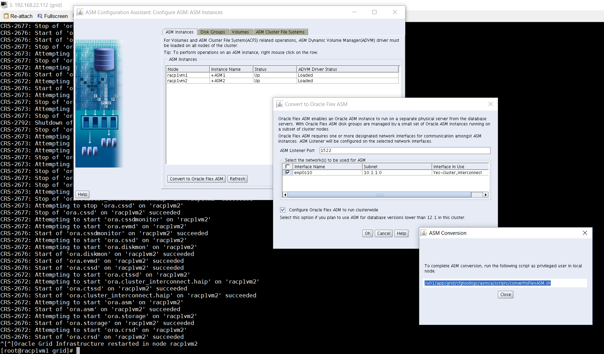

This was first published on https://www.dbi-services.com/blog/conversion-to-flex-asm-with-asmca-takes-5-minutes/ (2016-03-11)
Republishing here for new followers. The content is related to the versions available at the publication date.
.
In 12c Oracle recommands Flex ASM. You can opt for it at Grid Infrastructure installation, but it’s very easy to convert to it later from asmca. It has to configure
[grid@racp1vm1 ~]$ asmcmd showclustermode
ASM cluster: Flex mode disabled
In ASMCA if you are not in Flex ASM then you have the button to convert to it from the first tab. A listener will run on each node, so you define the port and the interface: 
On my laptop with the lab environment from the dbi services Grid Infrastructure / RAC training workshop running the converttoFlexASM.sh as root took 5 minutes.
When it’s finished, you restart asmca and see that the convert button is not there anymore:
you can see it from asmcmd as well:
[grid@racp1vm1 ~]$ asmcmd showclustermode
ASM cluster : Flex mode enabled
I can shutdown the ASM instance on node 2 (not from node 1 as I’ve run asmca from it):
Both nodes have the flex ASM listener:
[grid@racp1vm1 ~]$ crsctl status resource -t
--------------------------------------------------------------------------------
Name Target State Server State details
--------------------------------------------------------------------------------
Local Resources
--------------------------------------------------------------------------------
ora.ASMNET1LSNR_ASM.lsnr
ONLINE ONLINE racp1vm1 STABLE
ONLINE ONLINE racp1vm2 STABLE
ora.CRS_DG.dg
ONLINE ONLINE racp1vm1 STABLE
OFFLINE OFFLINE racp1vm2 STABLE
ora.DATA.dg
ONLINE ONLINE racp1vm1 STABLE
OFFLINE OFFLINE racp1vm2 STABLE
ora.DATA2.MYACFSVOL.advm
ONLINE ONLINE racp1vm1 Volume device /dev/a
sm/myacfsvol-160 is
online,STABLE
ONLINE ONLINE racp1vm2 Volume device /dev/a
sm/myacfsvol-160 is
online,STABLE
ora.DATA2.dg
ONLINE ONLINE racp1vm1 STABLE
OFFLINE OFFLINE racp1vm2 STABLE
Note that the diskgroups are OFFLINE in node 2 because I stopped the ASM instance, but the ACFS filesystem is still up, thanks to flex ASM.
{kind=link}
{kind=link}
{kind=link}